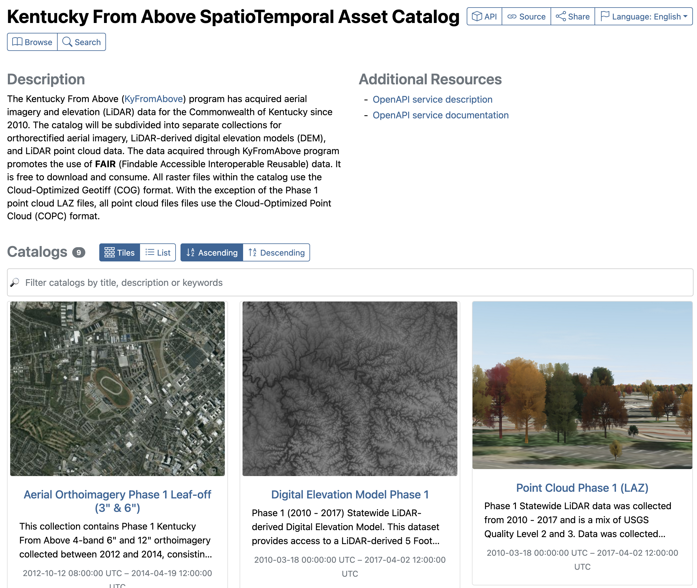

Stac-Browser
Landing Page
Finally, what we really want to see.
It converts what looks like an JSON file into a user friendly experience. Please open a browser and go to the KyFromAbove Stac-Browser Landing Page:
https://kygeonet.ky.gov/stac

Button Functions
Let's take a look at the top right hand corner by clicking on each button to see what they show.
| Button | Display |
|---|---|
| API | Conformance Classes – API compliances |
| Source | ID, Version, Validity, Metadata File |
| Share | Share the URL or to social media |
| Language | Switch Languages |
On the left we have the browse and search buttons.
| Button | Function |
|---|---|
| Browse | Opens a side tab to toggle between collections |
| Search | Perform a search at the collection or item level (2 tabs) |
Additional Resources
| Term | Description |
|---|---|
| OpenAPI service description | JSON file describing the API endpoint |
| OpenAPI service documentation | API exploration, playground, tool |
Explore